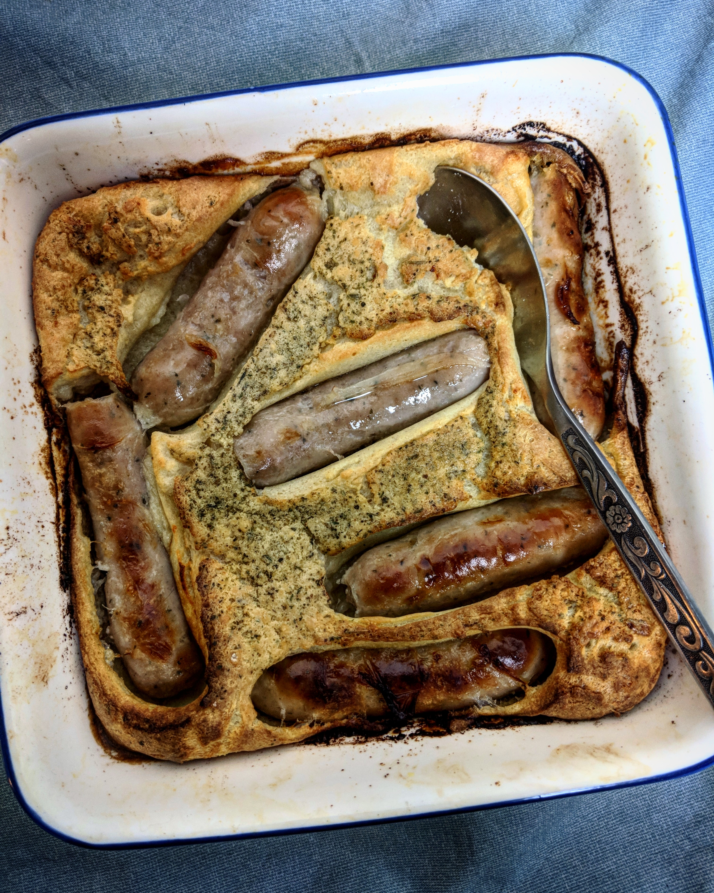

Toad In The Hole, 18p
Serves 4-6 from 18p each.
Ingredients:
- 25g butter or 2 tbsp cooking oil, 3p (£1.10/1l)
- 400g sausages, 70p (£1.19/681g)
- 100g plain flour, 3p (45p/1.5kg)
- pinch of salt, <1p
- 1 egg, 15p (89p/6 free range)
- 300ml milk, 17p (55p/1l)
Method
- First grab a roasting dish, around 10 inches by 12 inches, or a deep round cake tin will do the same job.
- Pop the butter or oil, and sausages, into the tin. Cook at 200C for around 10 minutes, giving the tin a jostle halfway through to make sure they cook evenly.
- While the sausages are cooking, get a mixing bowl. Add the flour, salt and the egg, and half the milk. Beat them together to form a smooth batter.
- Pour in the rest of the milk and continue to beat until very smooth.
- Remove the roasting tin from the oven and pour the batter in. Move the sausages so they are roughly evenly distributed. Bake for 40 minutes until the batter is risen and golden. DO NOT OPEN THE OVEN DOOR until the 40 minutes are over else your batter will deflate!
